РАЗРАБОТКА КОНФИГУРАЦИИ
ДЛЯ УЧЕТА ПОСЕЩЕНИЙ КЛИЕНТАМИ ЭКСКУРСИЙ
Сложность: *
Теги: справочник, документ, ввод на основании, схема компоновки данных
ЗАДАНИЕ
Заказчик просит разработать конфигурацию для учета посещений клиентами экскурсий.
1. В системе необходимо регистрировать посещения экскурсий на основании оформленной брони.
Пользователь системы по телефону с клиентом оформляет бронь выбранной экскурсии. Затем при посещении клиент оплачивает забронированную экскурсию наличными деньгами или банковской картой.
2. Нужно построить отчет о доходах с экскурсий.
Форма отчета:
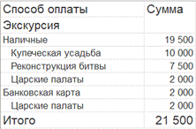
Отчет группирует информацию по способу оплаты экскурсии, а также подводит общий итог.
Подготовка
q Создать новую информационную базу.
q Открыть информационную базу в режиме «Конфигуратор».
q Открыть окно конфигурации.
Подробнее о том, как это сделать, смотрите в Лабораторной работе № 2 (стр. 17).
Выполнение
«Заказчик просит разработать конфигурацию для учета посещений клиентами экскурсий.»
Из условия следует, что необходимо хранить информацию о клиентах и проводимых экскурсиях. Для решения этой задачи нам понадобятся справочники.
Определение
Справочник – это объект конфигурации, который хранит справочную информацию, например, перечень товаров или список сотрудников (более подробно про справочники можно прочитать здесь: https://v8.1c.ru/platforma/spravochniki/).
Создадим справочник «Клиенты».
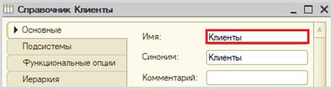
Создадим справочник «Экскурсии».
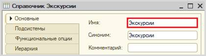
Откроем программу в режиме «1С:Предприятие» и добавим в каждый справочник несколько элементов.
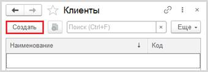
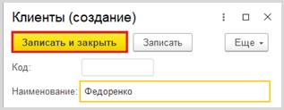
Обратите внимание, что поля «Код» и «Наименование» система сгенерировала самостоятельно при добавлении нового справочника. Эти поля являются стандартными реквизитами. Стандартные реквизиты платформа создает автоматически, исходя из свойств конкретного объекта конфигурации. Поле «Код» заполнять не нужно, система сделает это автоматически. Поле «Наименование» является обязательным для заполнения.
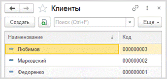
Аналогично – со справочником «Экскурсии».
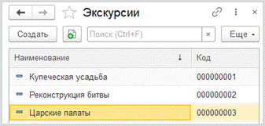
«В
системе необходимо регистрировать посещения экскурсий
на основании
оформленной брони.»
Для регистрации посещения экскурсий и брони необходимо воспользоваться объектом конфигурации документ.
Определение
Документ – это объект конфигурации, хранящий информацию о каких-либо событиях, произошедших в «жизни» предприятия. Например, с помощью документа можно зарегистрировать (то есть сохранить данные документа для последующей обработки) продажу товаров или начисление зарплаты (подробнее про документы можно прочитать здесь: https://v8.1c.ru/platforma/dokumenty/).
Добавим новый документ «Бронь».
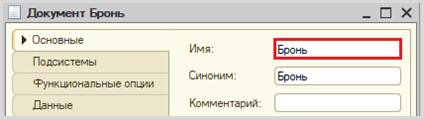
Для настройки структуры документа переходим на вкладку «Данные».
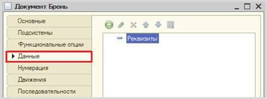
«Пользователь
системы по телефону с клиентом
оформляет бронь выбранной экскурсии.»
Из условия следует, что при оформлении брони необходимо указывать клиента и бронируемую экскурсию.
Добавим реквизит «Клиент», тип – «СправочникСсылка.Клиенты». Данный реквизит будет хранить ссылку на элемент справочника «Клиенты».
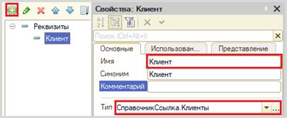
Далее добавим реквизит «Экскурсия», тип – «СправочникСсылка.Экскурсии».
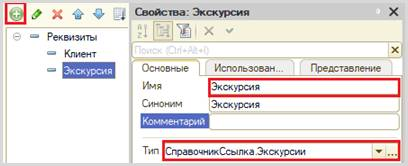
q чтобы подготовить документ для использования в будущем, необходимо его записать;
q чтобы отметить документ как совершенный – провести.
Но для документа «Бронь»
нам не нужно два этапа, поскольку данный документ будет заполняться
пользователем сразу в момент диалога с клиентом и в должен считаться уже
совершенным действием. Отключим проведение у документа на вкладке
«Движения».
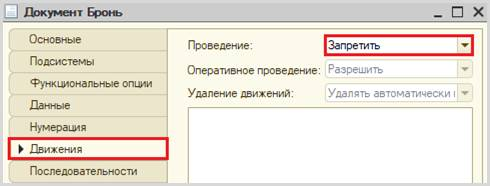
Запустим режим «1С:Предприятие» и попробуем создать несколько документов.
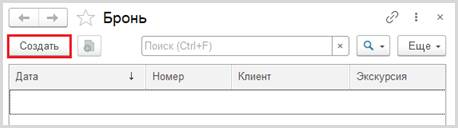
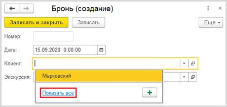
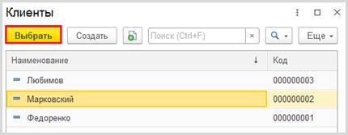
Аналогичным образом укажите экскурсию и нажмите на кнопку «Записать и закрыть».
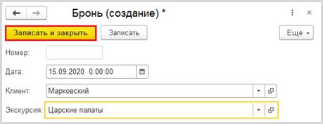
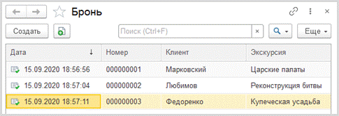
«…клиент
оплачивает забронированную экскурсию
наличными деньгами или банковской
картой.»
Из условия следует, что способы оплаты определены заранее и представляют собой выбор из двух вариантов. Для решения задачи хранения информации, которая представляет собой фиксированный набор альтернатив, нам понадобится новый объект, который называется перечисление (подробнее про перечисления можно прочитать здесь: https://v8.1c.ru/platforma/perechisleniya/).
Добавим новое перечисление «СпособОплаты».
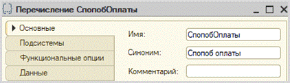
Значения перечисления (заготовленный список выбора) заполним на вкладке «Данные».
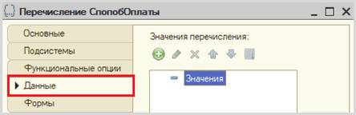
Добавим два способа оплаты: наличными и банковской картой.
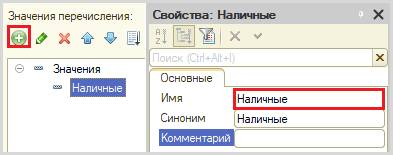
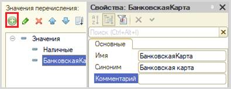
Для реализации посещения экскурсии нам также потребуется документ. Добавим новый документ «ПосещениеЭкскурсии».
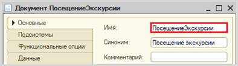
«Затем
при посещении клиент оплачивает забронированную
экскурсию наличными деньгами или
банковской картой.»
Из условия следует, что в новом документе потребуется хранить информацию о номере брони, клиенте, выбранной экскурсии, а также сумме экскурсии и способе ее оплаты.
Аналогично процессу создания реквизитов в документе «Бронь» добавим реквизиты в документ «ПосещениеЭкскурсии» экскурсии на вкладке «Данные».
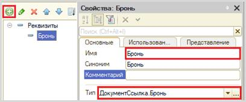
Чтобы у пользователя не было возможности создавать посещения экскурсий, не указав бронь, настроим проверку заполнения.
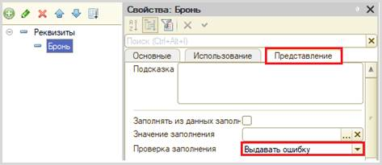
Добавим реквизиты «Клиент», «Экскурсия», «Сумма» и «СпособОплаты».
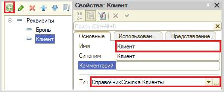
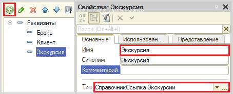
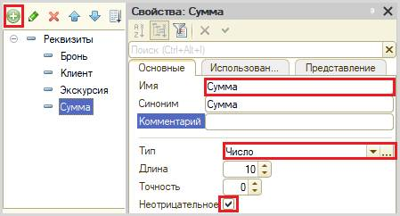
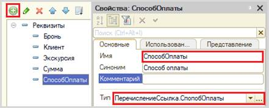
«… посещения экскурсий на основании оформленной брони.»
Условие дает нам понять, что документ «ПосещениеЭкскурсии» должен формироваться на основании документа другого вида. Таким образом, часть информации будет «перетекать» из одного документа в другой.
Для реализации такого функционала воспользуемся конструктором ввода на основании. (Более подробно про конструктор ввода на основании можно прочитать здесь: https://v8.1c.ru/platforma/konstruktor-vvoda-na-osnovanii/).
Чтобы им воспользоваться, перейдем на вкладку «Ввод на основании» документа «ПосещениеЭкскурсии».
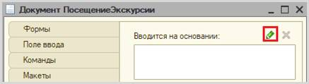
Поскольку информация будет поступать из документа «Бронь» в документ «ПосещениеЭкскурсии», то второй будет вводиться на основании первого. Укажем это.
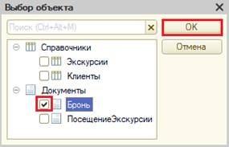
Далее нам необходимо описать Обработку заполнения нашего документа. Делать это будем с помощью конструктора ввода на основании.
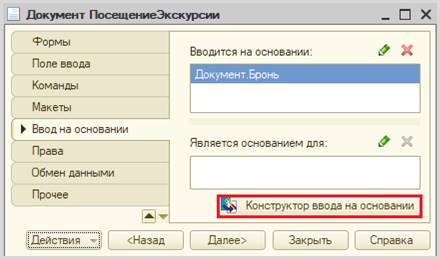
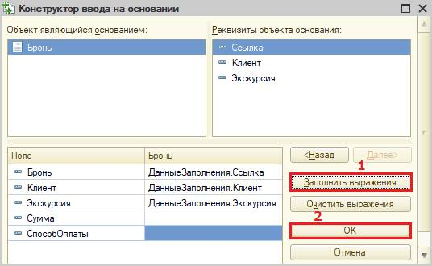
Нажмите на кнопку «Заполнить выражения». Автозаполнение происходит по принципу совпадения имен реквизитов и типов данных. Также есть возможность заполнить поля вручную.
По завершении работы с конструктором ввода на основании нажмите на кнопку «ОК».
В результате будет сформирован программный код Обработки заполнения в модуле объекта документа «ПосещениеЭкскурсии». Данный код описывает, какие данные из документа «Бронь» попадут в текущий документ.
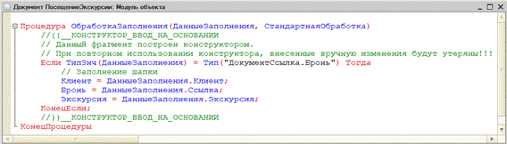
После проделанных настроек запустим режим «1С:Предприятие» и создадим несколько документов «Посещение экскурсии» на основании уже созданной брони.
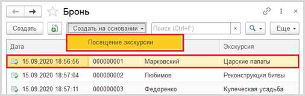
Мы вводим документ «на основании», поэтому бо́льшая часть данных уже будет указана.
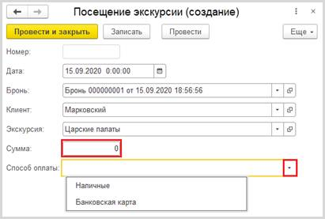
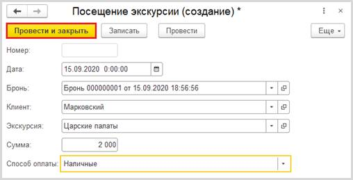
Аналогичным способом создайте еще несколько документов «Посещение экскурсии» на основании документов «Бронь».
Внимание! Обязательно укажите разные способы оплаты!
В результате список документов «Посещение экскурсии» должен выглядеть подобным образом:
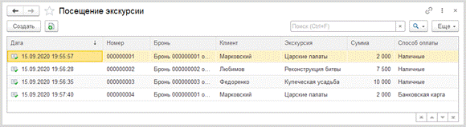
«Нужно построить Отчет о доходах с экскурсий.»
Построим отчет. Для этого воспользуемся соответствующим объектом конфигурации.
Определение
Отчет – это такой объект конфигурации, который формирует данные в понятном для пользователя виде, например, в виде таблицы или диаграммы (подробнее про отчеты можно прочитать здесь: https://v8.1c.ru/platforma/otchet/).
Добавим отчет «ДоходыСЭкскурсий». Воспользуемся схемой компоновки данных.
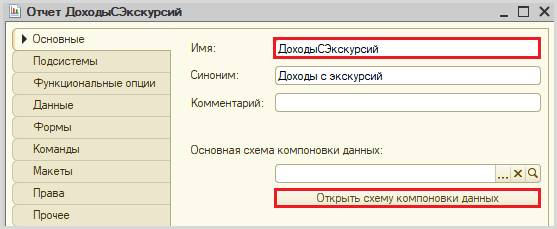
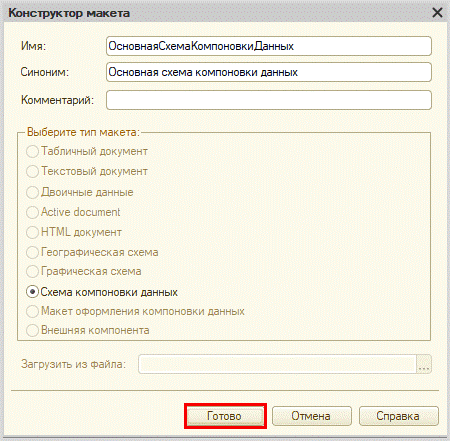
Все созданные нами объекты конфигурации представляют собой таблицы базы данных. В режиме «1С:Предприятие» мы заполняем эти таблицы данными. Чтобы получить эти данные для отображения в отчете, нужно сформировать запрос к базе данных.
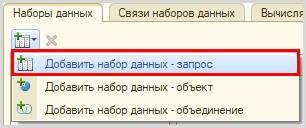
Для формирования запроса воспользуемся конструктором запроса.

Открывается конструктор запроса. Эта вкладка имеет три части:
q Часть слева отображает все объекты конфигурации, имеющиеся в нашей базе данных. Необходимо выбрать лишь те объекты, из которых мы хотим получать данные.
q Посередине находятся таблицы – это выбранные нами объекты, откуда мы хотим получать данные для конкретного отчета.
q Справа поля – это те значения (поля), которые мы хотим увидеть в отчете.
Данные будем брать из регистра накоплений напрямую, чтобы иметь возможность рассчитывать средний балл.
Чтобы перенести данные из одного окна в другое, просто перетащите нужные поля с помощью мыши либо воспользуйтесь стрелочками, расположенными между окнами.
В результате данное окно должно быть заполнено следующим образом:
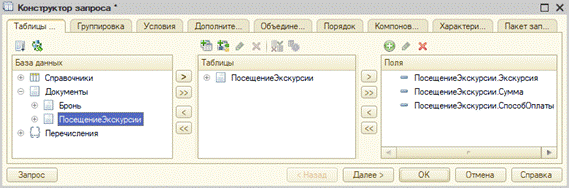
Поскольку в отчет должны попадать только совершенные (проведенные) посещения экскурсий – перейдем на вкладку «Условия».
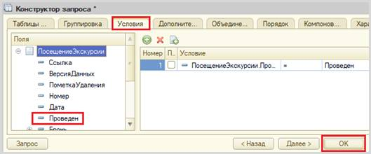
Нажмите на кнопку «ОК».
Конструктор сформировал запрос на встроенном языке запросов 1С. Поскольку документ может быть проведен или не проведен, значит, нужно установить пометку проведения в значение Истина. Это нужно для того, чтобы в отчет не попали непроведенные (не совершенные) документы.
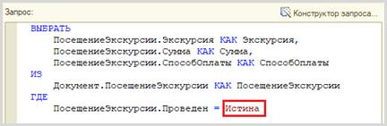
Заказчика интересуют доходы как по конкретным экскурсиям, так и вообще. Для решения этой задачи укажем поле «Сумма» в качестве ресурса на соответствующей вкладке. Теперь для данного поля система будет вести подсчет итогов.
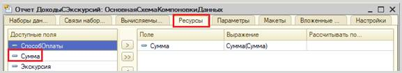
Теперь переходим на вкладку «Настройки» для оформления внешнего вида отчета. Воспользуемся конструктором настроек.
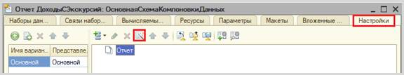
Построим отчет в виде списка.
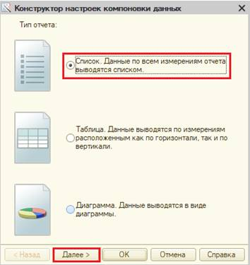
Выберем поля, которые будут отображаться в отчете.
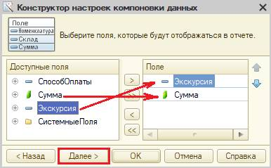
Сгруппируем отображаемые поля по способу оплаты.
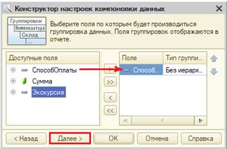
Отсортируем наш отчет по убыванию суммы доходов.
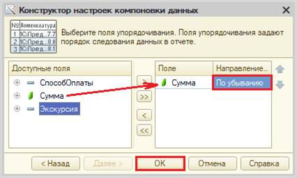
Отчет готов. Запустим систему в режиме «1С:Предприятие» и построим его.
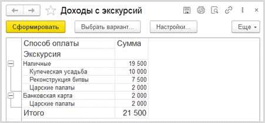
Поставленная задача решена.